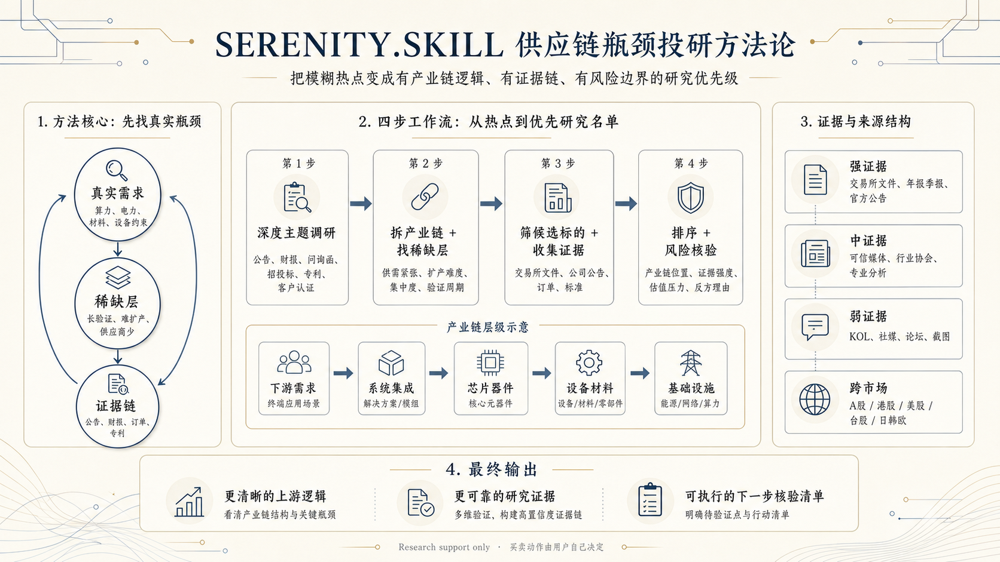

当 AI 半导体、机器人、CPO、算力、电力设备这些热点出现时，很多人能感受到热度，却很难判断该看哪条产业链、哪类公司、哪个基金方向。传统投研的困难不在于信息不足，而在于缺乏一套系统性的筛选框架——谁靠近真实瓶颈，谁只是蹭了主题。
Serenity / @aleabitoreddit 在公开内容中长期围绕 AI、半导体、光通信、机器人等科技主题做供应链研究。其核心洞察是：大行情里真正有价值的机会，常常藏在系统扩张时最难绕开的关键环节——而不是最热门的那个名字。
把模糊的热点信息，变成有产业链逻辑、有证据链支撑、有风险边界的研究优先级。
面向一级市场投资人和行业研究员。

00 · 背景
Serenity.skill 把 @aleabitoreddit 公开内容中可观察到的投研路径做成可复用的 Agent 方法。它不从宏观叙事出发，而是从产业链的稀缺层找上涨逻辑更清晰的标的。
当 AI 半导体、机器人、CPO、算力、电力设备这些热点出现时，很多人能感受到热度，却很难判断该看哪条产业链、哪类公司、哪个基金方向。传统投研的困难不在于信息不足，而在于缺乏一套系统性的筛选框架——谁靠近真实瓶颈，谁只是蹭了主题。
Serenity / @aleabitoreddit 在公开内容中长期围绕 AI、半导体、光通信、机器人等科技主题做供应链研究。其核心洞察是：大行情里真正有价值的机会，常常藏在系统扩张时最难绕开的关键环节——而不是最热门的那个名字。
大行情里真正有价值的机会，常常藏在系统扩张时最难绕开的关键环节。
— Serenity / @aleabitoreddit
Serenity.skill 复用的是这套公开方法论中的研究路径——从热点出发拆产业链，找供应链瓶颈，筛候选公司，再检查公告、财报、客户、产能和风险，最后整理成一份优先研究清单。所有判断回到公告、交易所文件、财报、电话会、监管/项目文件、专利、标准、可信媒体和专业分析。
01 · 方法论
核心逻辑很简单：先看真实需求在哪里，再看哪个环节更难扩产、更难替代，最后判断谁更值得继续深挖。
AI 基础设施 · 半导体 · CPO · 先进封装 · 电力设备 · 机器人 · 材料 · 测试 · 光通信
A 股 · 港股 · 美股 · 台股 · 日股 · 韩国 · 欧洲 — 跨市场标的发现与比较
02 · 流程
从市场叙事到可执行的研究优先级，经过四个清晰的推理阶梯。
选定市场和主题，联网查找公告、财报、问询函、招投标、环评/能评、专利、客户认证。建立对产业链结构的底层理解。
将主题拆解为 6–8 个产业链层级。为每层评估供需紧张度、扩产难度、供应商集中度、验证周期。定位不可绕开的瓶颈。
基于稀缺层位置构建候选池。首选来源：交易所文件、公司公告、官方订单、专利、标准。社交媒体作为线索来源。
按需求压力、稀缺层紧密度、证据强度、估值压力、时机、风险排序。为每个标的输出产业链位置、证据链、主要风险和核验清单。
输出形式是一份优先研究清单，每家公司标注：卡住的环节、产业链位置、证据强度、排序理由和主要风险。排序逻辑独立于个股 momentum——强劲的股价表现不一定排在更紧的供应链瓶颈前面。
# 输出示例：优先研究排序 我会先看 [方向 A]， 再看 [方向 B] 和 [方向 C]。 如果你想找股票线索，我会优先研究： 1. [公司 A]：最接近关键瓶颈环节 上涨逻辑来自需求增长 / 产能紧张 / 客户验证 / 国产替代。 2. [公司 B]：处在产业链位置，适合跟踪订单 / 毛利率 / 产能利用率。 3. [公司 C]：弹性更大，但需要确认核心风险或缺失证据。
03 · 用例
针对一级市场投资人和研究员的常见判断场景，Serenity 方法论提供结构化的切入方式。
从热点出发，先拆产业链，再把更接近真实需求和扩产瓶颈的方向排出来——而不是在热门股里猜。
比较不同环节的供需紧张度、竞争格局和证据强弱，定位最不可绕开的上游稀缺层。
挑战式分析：查它在产业链里的真实位置、客户证据、收入质量、主要风险。区分真瓶颈和主题标签。
按产业链位置、证据强度、估值压力、风险点做优先级排序——股价 momentum 不是主要维度。
| 你的问题 | 可以这样问 AI | Serenity 会帮你看什么 |
|---|---|---|
| 最近 AI 半导体很火 | 普通人应该先研究哪些方向？ | 拆产业链，把更靠近瓶颈的方向排出来 |
| 机器人主题基金值得买吗 | 应该重点看哪些上游环节？ | 找基金背后的核心受益链条和持仓方向 |
| 每天刷消息很焦虑 | 带我学产业链式研究框架 | 从热点→需求→卡点→证据→风险逐步建立框架 |
| 想买 CPO 方向 | 帮我挑战这家公司是不是核心供应商 | 查产业链位置、客户证据、收入质量和风险 |
04 · 数据
Serenity.skill 自发布以来在开发者社区和投资研究社群中获得了显著 traction。以下数据反映其实际影响力和方法论的可信度。
一个仅有 1 人核心维护的开源项目，能在 AI 投研工具赛道获得近 2,000 颗星和近 300 次 fork，说明其方法论获得了广泛认可。社区贡献者来自量化研究、产业投资、半导体分析等多个领域。
项目提供了完整的工具链支撑：本地瓶颈评分卡（Python 脚本）、证据分级框架、市场源操作手册、风险与合规核验清单，以及一套可直接复制的 Prompt Pack——覆盖深度主题调研、A 股/港股/美股扫描、单公司挑战、候选标对比、研究伙伴对话等多种模式。
| 资产类别 | 内容 | 状态 |
|---|---|---|
| SKILL.md | 核心方法论描述 + 触发词 + 输出合约 | 已发布 |
| references/ | 深度研究工作流 · 证据阶梯 · 市场源手册 · 风险合规 | 已发布 |
| assets/ | 瓶颈评分卡 JSON · Prompt Pack · 论题模板 | 已发布 |
| scripts/ | serenity_scorecard.py · validate_skill.py | 已发布 |
| examples/ | A 股 AI 半导体演示 · AI 基建瓶颈研究 · 研究对话 | 已发布 |
Research support only. Serenity.skill 负责研究、排序和推理；最终买卖决策由你自己决定。
— 项目立场声明